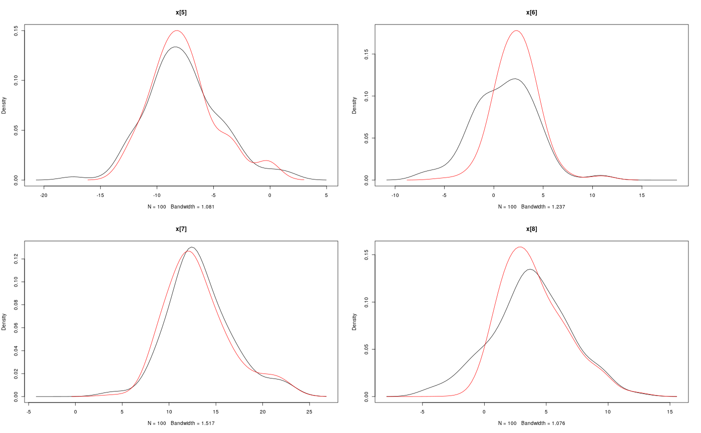
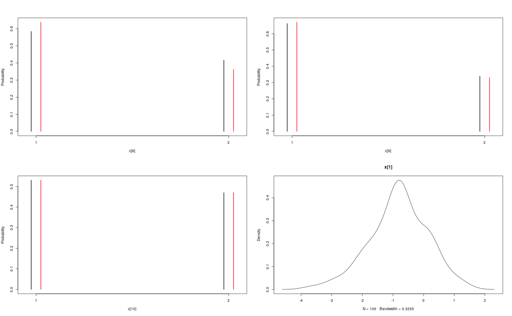

Plot methods.
Source:R/plot-methods.r
Plot methods.
# S3 method for density.smcarray.fsb.univariate plot(x, type = "l", col = 1:6, pch = NULL, lwd = NULL, lty = NULL, main = NULL, xlab = NULL, ylab = "Density", xlim = range(unlist(lapply(x, function(x) x$x))), ylim = c(0, max(unlist(lapply(x, function(x) x$y)))), ...) # S3 method for table.smcarray.fsb.univariate plot(x, type = "h", col = 1:6, pch = NULL, lwd = 2, lty = NULL, main = NULL, xlab = NULL, ylab = "Probability", xlim, ylim = c(0, max(unlist(x))), width = 0.1, ...) # S3 method for density.smcarray plot(x, main = NULL, xlab = NULL, ylab = "Density", ...) # S3 method for table.smcarray plot(x, main = NULL, xlab = NULL, ylab = "Probability", ...) # S3 method for density.smcarray.fsb plot(x, main = NULL, xlab = NULL, ylab = "Density", ...) # S3 method for table.smcarray.fsb plot(x, main = NULL, xlab = NULL, ylab = "Probability", ...) # S3 method for density.smcarray.fsb.list plot(x, main = NULL, xlab = NULL, ylab = "Density", ...) # S3 method for table.smcarray.fsb.list plot(x, main = NULL, xlab = NULL, ylab = "Probability", ...) # S3 method for table.mcmcarray plot(x, main = NULL, xlab = NULL, ylab = "Probability", ...) # S3 method for density.mcmcarray.univariate plot(x, type = "l", main = x$data.name, ...) # S3 method for density.mcmcarray plot(x, main = NULL, xlab = NULL, ...) # S3 method for histogram.mcmcarray plot(x, main = NULL, xlab = NULL, ...) # S3 method for table.mcmcarray.list plot(x, main = NULL, xlab = NULL, ...) # S3 method for density.mcmcarray.list plot(x, main = NULL, xlab = NULL, ylab = "Density", ...) # S3 method for histogram.mcmcarray.list plot(x, main = NULL, xlab = NULL, ...)
Arguments
| x | a density object. |
|---|---|
| type, col, pch, lwd, lty | plotting parameters with useful defaults. |
| main, xlab, ylab | plotting parameters with useful defaults. |
| xlim, ylim | plotting parameters with useful defaults. |
| ... | further plotting parameters. See
|
| width | real. width of spacing for bars at the same value. |
Value
NULL
See also
plot.density,
plot.histogram, plot.table
Examples
#' # SMC algorithm data(out_smc) par(mfrow = c(2, 2)) plot(biips_density(out_smc$x, bw = 'nrd0', adjust = 1, n = 100))#' # PIMH algorithm data(out_pimh) par(mfrow = c(2, 2))